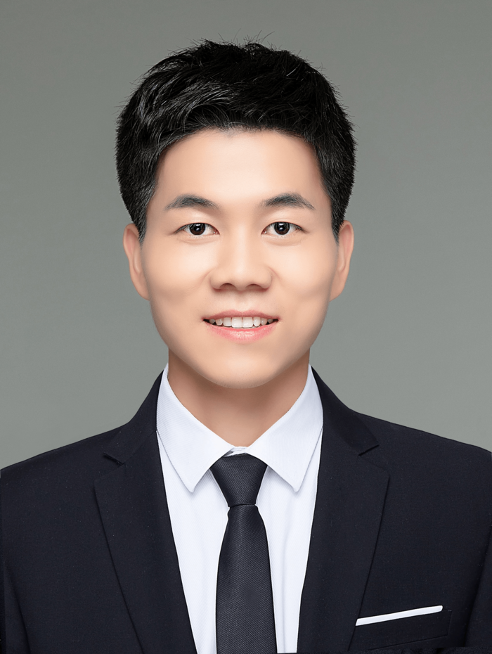

Chongyang Tao (陶重阳)
Home
Publications
Team
Activities
Teaching
中文

副教授
大数据与脑机智能高精尖创新中心
&
复杂关键软件开发环境国家重点实验室
计算机学院
北京航空航天大学
Email：chongyang@buaa.edu.cn
通讯地址：北京市海淀区学院路37号北京航空航天大学新主楼G座
个人简介
陶重阳，北京航空航天大学副教授。2020年博士毕业于北京大学信息科学技术学院，后加入微软工作，历任博士后研究科学家和高级研究科学家。研究方向为自然语言处理、大语言模型及数据智能相关领域，参与微软小冰(Rinna/Zo)、必应聊天助手、必应生成/搜索模型以及WizardLM系列模型的研发与构建。曾在 ACL、EMNLP、AAAI、ICLR、SIGIR、TOIS等国际会议及期刊上发表论文80余篇，包括CCF-A/TH-CPL-A类论文50余篇，相关研究获得NLPCC’19杰出论文奖以及PaperDigest ICLR'24最具影响力论文。担任ACL ARR、KDD、WWW、EMNLP、CCKS 等国内外学术会议的领域主席或SPC。主持国家自然科学基金、电子学会、CAAI-蚂蚁、航天院所等多项科研项目。入选北航卓越青年学者、Aminer AI 2000学者。
研究方向
自然语言处理
大语言模型
对话系统
高效知识检索
数据智能